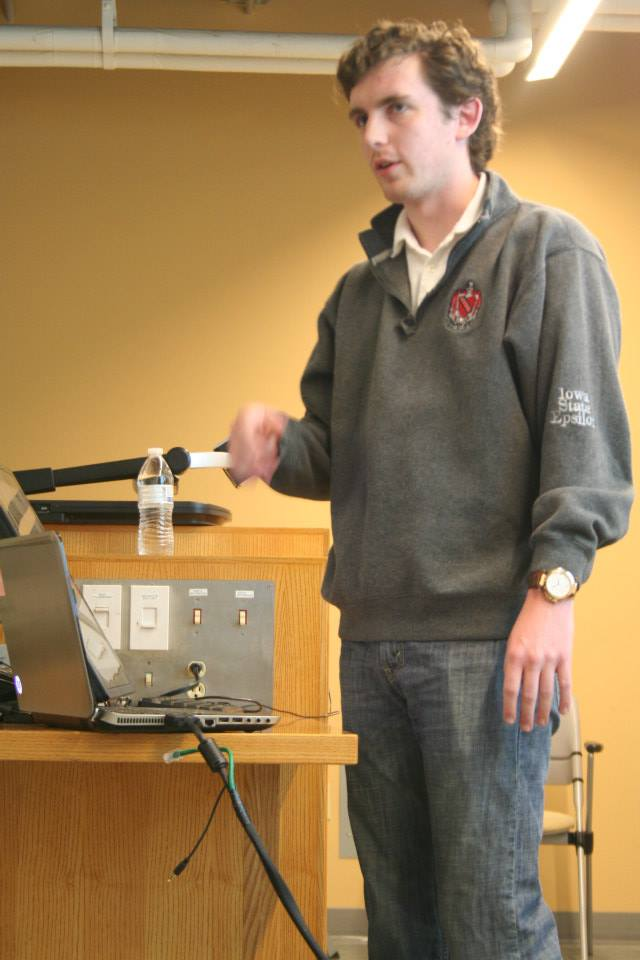

Connor Jennings
About Me
Education• B.S. Economics, Iowa State University (2014) • B.S. Industrial Engineering, Iowa State University (2014) • M.S. Industrial Engineering, Iowa State University (Expected 2015) BackgroundI am currently a Master student in Industrial Engineering at Iowa State University. My major professor is Dr. Janis Terpenny and as a research assistant, I work in for the Center for E-Design. Currently we are working on developing cost simulations tools and methods to evaluate business decisions when it comes to component obsolescene over time. I also work in the Iowa State Research Park at NewLink Genetics as an Finanical Planning and Analysis Intern. When I am not working at NewLink or The Center For E-Design, I like to sit around with friends and tell stories or playing lacrosse or soccer. Resume (Link) |
 |